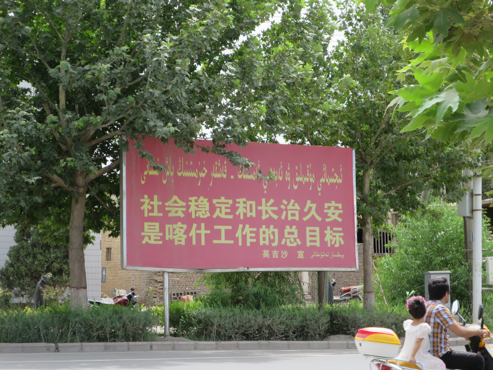
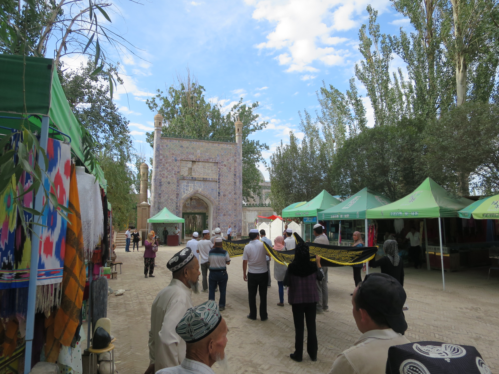

2015-07-29
老城中有一條街賣小刀，店門大大隻字「英吉莎」，是在喀什以南的城市，製造小刀聞名，今天上午，就坐車去這個地方。去英吉莎的巴士又是在國際客運站開出，買票時售票員問我坐大車還是小車，我問有什麼分別，她說大車慢，小車很快。
然後我就買了小車的票，原來小車的意思是一輛像的士大小車的，客滿才開車的，所以，什麼小車比大車快，也不是必然的。我坐的小車，比大車還遲開出，而且，我認為大車比小車還舒服呢。因為小車根本就是四個乘客迫在一輛的士上，坐後排中間的最慘。
我坐後排司機後面的位，個司機不斷抓頭，而我覺得車的座位也不太清潔。不知發生什麼事，到了英吉莎不久，我的頭就癢到不得了，極之難受那種，我只想起剛才那個司機不斷地抓，我也癢到不停抓，但沒用，抓完不久就癢。
是不是有些引致敏感的東東呢？我坐的士去附近的小刀廠，司機卻說其實周圍也是小刀廠，不過還載我去了一兩間，我痕癢難擋，旁人看見我一定以為我瘋了，我去到一間小刀廠前，見到有水喉，就拿手巾出來濕水洗頭，但似乎仍沒有用。
一面忍著，一面「參觀」，一見一對黑色小刀就不想太多，買了下來，因為不想寄艙，就多付四十元托運，店員說，送去香港，只用十至十五日，而事實上過了兩個月也未寄到香港，有人笑說，這危險品，應該已經在天津的黑洞中吧。
買完匆匆又再洗一次頭，神奇地今次有效，不久之後，不再癢了，我也不知道，是洗走了一些東西，還是我適應了，不再敏感。我感覺到自己十分的髒，行回客運站買票回喀什去，英吉莎本身沒什麼好看的。
坐大車回喀什也很快，心想下一次也不坐小車。回到旅舍，連忙回去沖洗一下，但今天應該有點霉運，做什麼也不小心，腳一踏在還濕的地上，就滑倒了，然後發覺，右腳應該是撞了什麼東西給割傷了，還要是上五寸下五寸的位置。
我問旅舍的人借消毒藥水，他們一見我的腳，就幫我消毒包紥，非常好人。然後我又出去了，在老城遇上一些播著像俄羅斯音樂的車，而車上的小童全都裝扮得好有趣，像馬戲團表演的人，每人都戴著不同的圓圓方方的帽子，車本身也裝成一個大帽，上面展示著不同的小帽。
穿過老城、大巴扎，一直東行，很久之後，終於行到去香妃墓，香妃墓很安靜，不過其實也沒什麼好看的，我來大概其實是想行路，看沿途的風景而已，反而臨離開，遇上有一班人在不知做什麼儀式，他們在墓園的入口前列隊，合力舉起一塊大布，上面好像是些經文，然後他們唸完一些東西之後就一起進入。
離開墓園在附近的的一檔類似士多的店喝點東西，店主見到我的包紥快甩掉，給了我一些膠布。又要再行回去，此行我沒有好好保護雙腳，行得很辛苦，行行下旁邊出面一輛驢車，車主叫我上車，好像一元就去什麼地方似的，看見這驢子車，在這個急速城市化中的城市馬路中，心想何時會消失。坐這些車還辛苦過行路，去到大巴扎前我就叫下車了。
在老城吃雪糕，雪糕是人手用一支不知什麼東西搞出來。老城南面有個大大的摩天輪，但我沒興趣行過去，看過去的畫面，摩天輪前就是那些還未被清拆完的舊區，摩天輪像代表著發展就是一切的巨大力量，要把前面的舊物踩平。


